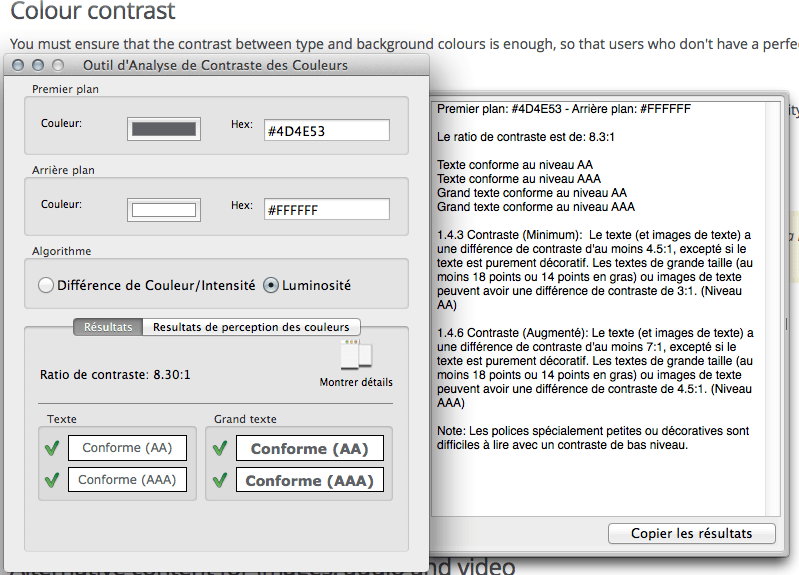

This article provides basic tips to help you design websites for any kind of user.
| Prerequisites: | You should first read What is accessibility?, since we don't cover accessibility in detail here. |
|---|---|
| Objective: | Universal design means design for everybody, regardless of disabilities or technical constraints. This article lists the most important quick-wins for universal design. |
When you're building a website, one top issue to consider is Universal Design: accommodating all users regardless of disability, technical constraints, culture, location, and so on.
There is no active learning available yet. Please, consider contributing.
To keep your text readable, use a text color that contrasts well with the background color. Make it extra easy to read the text, to help visually-impaired people and people using their phones on the street.
The {{Glossary("W3C")}} defines a good color mix with an algorithm that calculates luminosity ratio between foreground and background. The calculation may seem pretty complicated, but we can rely on tools to do the job for us.
Let's download and install the Paciello Group's Color Contrast Analyser.
Note: Alternatively you can find a number of contrast checkers online, such as WebAIM's Color Contrast Checker. We suggest a local checker because it comes packaged with an on-screen color picker to find out a color value.
For instance, let's test the colors on this page and see how we fare in the color Contrast Analyser:

The luminosity contrast ratio between text and background is 8.30:1, which exceeds the minimum standard (4.5:1) and should enable many visually-impaired people to read this page.
You can specify font size on a website either through relative units or absolute units.
Absolute units are not proportionally calculated but refer to a size set in stone, so to speak, and are expressed most of the time in pixels (px). For instance, if in your CSS you declare this:
body { font-size:16px; }
… you are telling the browser that whatever happens, the font size must be 16 pixels. Modern browsers get around this rule by pretending that you're asking for "16 pixels when the user sets a zoom factor of 100%".
Yet, for many years Internet Explorer adamantly displayed 16 pixels as 16 pixels. In this case, zooming did nothing, even as late as Internet Explorer 8, which we still have to cater to because it's still around.
Also called proportional units, relative units are computed relative to a parent element. Relative units are friendlier to accessibility because they respect the settings on the user's system.
Relative units are expressed in em, % and rem:
%emremem.Suppose we wanted a base font size of 16px and an h1 (main heading) at the equivalent of 32px, yet if within the h1 we find a span with the subheading class, it too must be rendered at the default font size (usually 16px).
Here is the HTML we're using:
<!DOCTYPE html>
<html lang="en">
<head>
<meta charset="UTF-8">
<title>Font size experiment</title>
</head>
<body>
<h1>This is our main heading
<span class="subheading">This is our subheading</span>
</h1>
</body>
</html>
A percent-based CSS will look like this:
body { font-size:100%; } /* 100% of the browser's base font size, so in most cases this will render as 16 pixels */
h1 { font-size:200%; } /* twice the size of the body, thus 32 pixels */
span.subheading { font-size:50%; } /* half the size of the h1, thus 16 pixels to come back to the original size */
The same problem expressed with ems:
body { font-size:1em; } /* 1em = 100% of the browser's base font size, so in most cases this will render as 16 pixels */
h1 { font-size:2em; } /* twice the size of the body, thus 32 pixels */
span.subheading { font-size:0.5em; } /* half the size of the h1, thus 16 pixels to come back to the original size */
As you can see, the math quickly gets daunting when you have to keep track of the parent, the parent's parent, the parent's parent's parent, and so on. (Most designs are done in pixel-based software, so the math has to be done by the person coding the CSS).
Enter rem. This unit is relative to the root element's size and not to any other parent. The CSS can be rewritten thus:
body { font-size:1em; } /* 1em = 100% of the browser's base font size, so in most cases this will render as 16 pixels */
h1 { font-size:2rem; } /* twice the size of the body, thus 32 pixels */
span.subheading { font-size:1rem; } /* original size */
Easier, isn't it? This works as of Internet Explorer 9 and in every other current browser, so please feel free to use this unit.
Note: You may notice Opera Mini does not support font sizing in rem. It will end up setting its own font size, so don't bother feeding it font units.
Because you don't know when a browser is going to come around and refuse to zoom up text whose size is expressed in pixels. Also, check your website's statistics: you may receive visits from older browsers.
We would advise the following:
rem units, most browsers will be very happy with them;Note: Your mileage may vary. If you have to cater to older browsers, you'll have to use ems and do a bit more math.
There is a longstanding debate about line length on the web, but here's the story. Back when we had newspapers, printers realized that the reader's eyes would have trouble going from one line to the next if the lines were too long. The solution? Columns.
Of course the problem doesn't go away when we switch to the Web. The reader's eyes act like a shuttle going from line to line. To make it easier on people's eyes, limit line width to around 60 or 70 characters.
To achieve this, you can specify a size for your text's container. Let's consider this HTML:
<!DOCTYPE html>
<html lang="en">
<head>
<meta charset="UTF-8">
<title>Font size experiment</title>
</head>
<body>
<div class="container">
<h1>This is our main heading
<span class="subheading">This is our subheading</span>
</h1>
<p>[lengthy text that spans many lines]</p>
</div>
</body>
</html>
We have a div with class container. We can style the div either to set its width (using the width property) or its maximum width so that it never gets too large (using the max-width property). If you want an elastic/responsive website, and you don't know what the browser's default width is, you can use the max-width property to allow up to 70 characters per line and no more:
div.container { max-width:70em; }
Websites often include stuff besides plain text.
Images can be either decorative or informative, but there's no guarantee that your users can see them. For example,
alt attribute: <img src="deco.gif" alt=""> so they don't clog up the text.alt attribute.If the image can be described succinctly, you can provide an alt attribute and nothing more. If the image cannot be described succinctly, you will have to either provide the same content in another form in the same page (e.g., complement a pie chart with a table providing the same data), or resort to a longdesc attribute. This attribute's value is a URL pointing towards a resource explicitly describing in detail the image's content.
Note: the use and even the existence of longdesc has been debated for quite some time. Please refer to the W3C's Image Description Extension (longdesc) for the full explanation and thorough examples.
You must also provide alternatives to multimedia content.
Some users may choose to display images, but still have limited bandwidth available, especially in developing countries and on mobile devices. If you want a successful website, please compress your images. There are various tools to help you, either online or local: